4. Import Datasets
To review the difference between raster and vector data, visit the Introduction .
Raster data
-
If you haven’t already, download and install QGIS .
-
Open QGIS.
-
Open a
New Empty Project. -
In the left-hand
Browsermenu, find the dropdown titledXYZ tiles.
-
Expand the
XYZ tilesdropown and double-clickOpenStreetMapto add a basemap to your project. The basemap exists in the background of the project to give us a reference while we are working. -
In the banner that runs across the top of the QGIS project, find the
Zoom inbutton. Select this button. 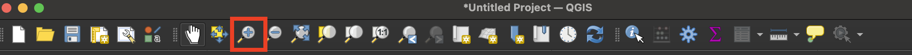 -
Click and hold to drag a square around Europe. You can also scroll in and out on your mouse to Zoom in and out. To pan around the map without zooming, engage the
Pan mapbutton, which looks like a hand.
-
In the left-hand browser menu, right-click
XYZ Tilesand selectNew Connection.
We are adding the map of Poland nationalities. This map has already been georeferenced. Georeferencing maps like this one allows us to overlay it onto other maps and directly compare maps and data of the same area. The map is currently hosted online as a streaming data layer. We can bring it into our project by specifying in QGIS what the layer URL is.
-
In the XYZ Connection wizard, title the new layer
Poland Nationalities 1919. -
Copy and paste the following link into where it asks for a URL:
https://allmaps.xyz/maps/8d5cc5d1fec615d6/{z}/{x}/{y}.png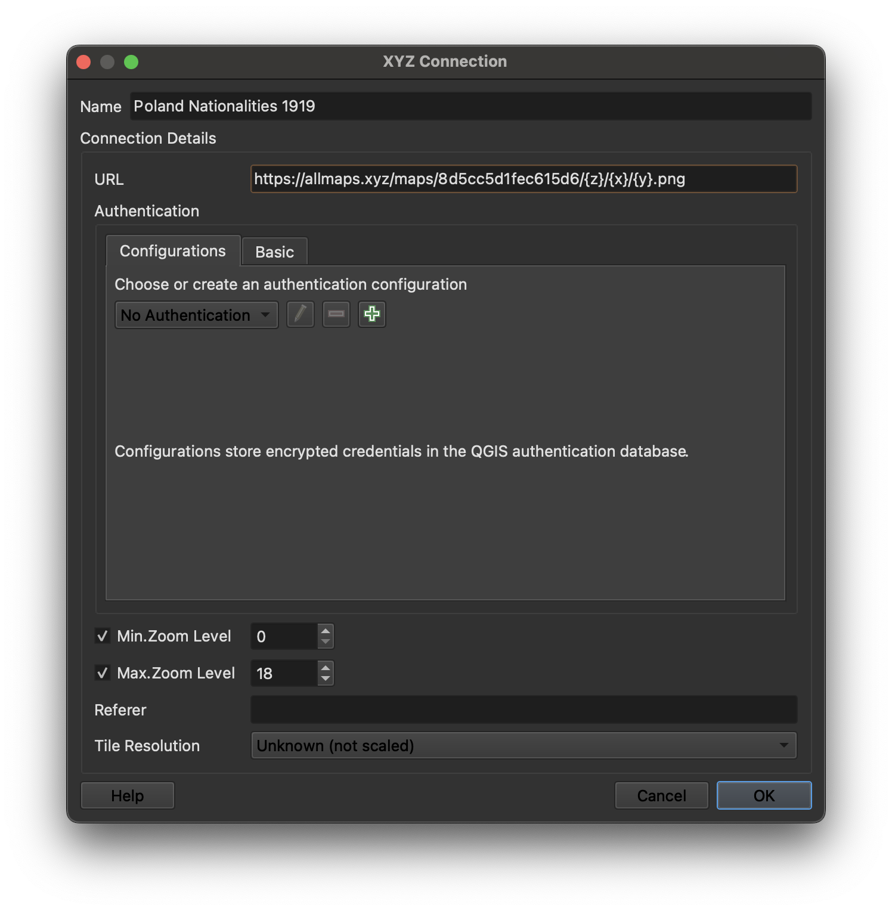
To learn how we georeferenced this map from our Digital Collections , you can follow this tutorial .
-
Accept all other defaults. Select
OK. -
Make sure the dropdown caret next to
XYZ Tilesin the browser menu is expanded. To add the Poland Nationalities 1919 map layer to your QGIS project, double-click onPoland Nationalities 1919. You should be able to see the old map overlaid on the basemap now.
It might take a few moments to render. As you zoom in and pan around, you are querying the map data at different zoom levels. The resolution should improve as it finishes loading.
Vector data
-
Download the zipped data from this Google Drive link .
-
Uncompress the zipped data folder. If you need help unzipping folders, follow the steps on this website .
-
In the very top QGIS program menu, select
Layer → Add Layer → Add Vector Layer.
-
In the Data Source Manager, Under
Source, click the ellipsis next toVector dataset(s). This will open your computer’s files. Navigate to where you downloaded and unzipped the project data. In theallenstein-regionfolder, select the fileallenstein-region.shp. 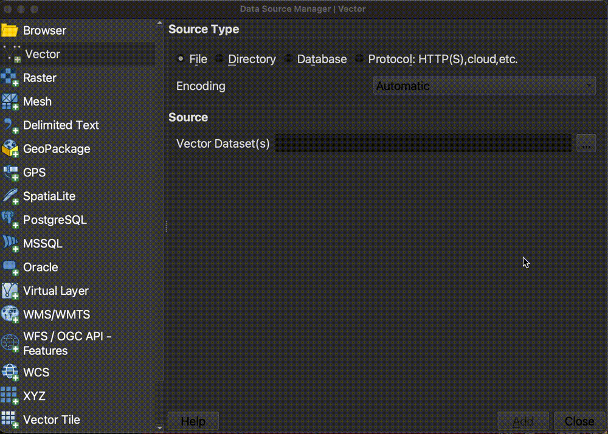 -
Select
Open. -
Select
AddandClose. Theallenstein-regionlayer should now appear in your layer list, and on your map. -
Follow the same prompts to add the Polish cities statistical data. In the Data Source Manager, Under
Source, click the ellipsis next toVector dataset(s). This will open your computer’s files. Navigate to where you downloaded and unzipped the project data. In thepoland-statsfolder, select the filepoland-stats.shp. -
Select
Open. -
Select
AddandClose. Thepoland-statslayer should now appear in your layer list, and on your map. Your map document should look something like this. All three layers, the georeferenced map, the allenstein region, and the polish cities statistics.
All three layers, the georeferenced map, the allenstein region, and the polish cities statistics. -
Let’s make this data a little easier to work with. Double-click the
allenstein-regionlayer in theLayers Panel. This will open up theLayer Propertiesfor theallenstein-regionshapefile.
-
Select the
Symbologytab from the Layer Properties menu. 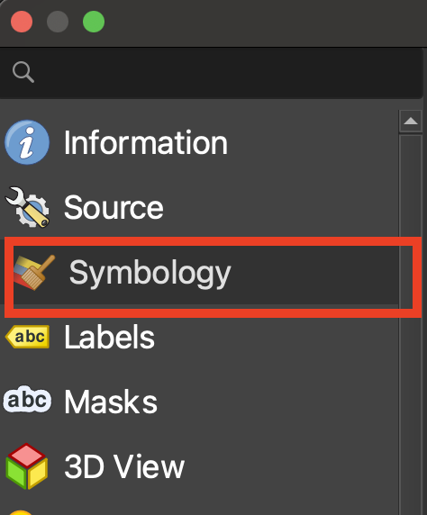 -
We want to change the symbology on the plebiscite region layer so that instead of QGIS symbolizing the region as a solid shape, it is just a border around the region. Select where it says
Simple Fill. 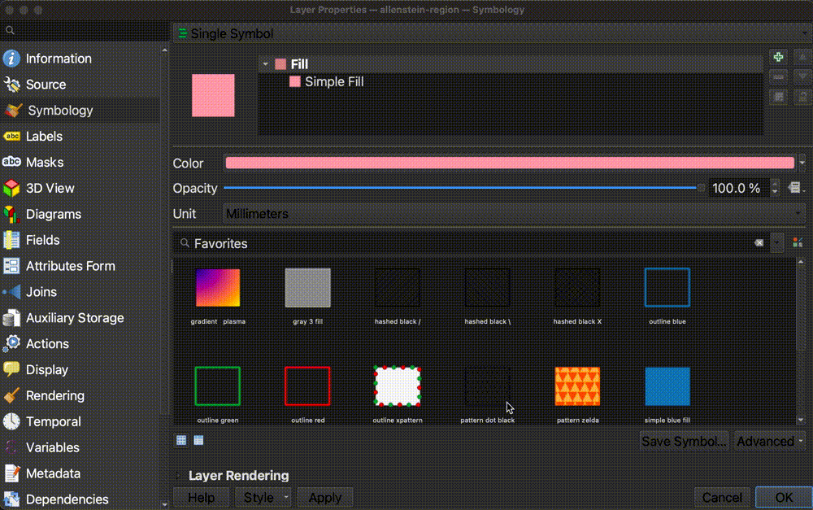 -
In the
Fill Styledrop-down, changeSolidtoNo Brush.
-
Let’s change the border outline, or “Stroke”, to a color and width that appears a bit more prominently against the detail of the bold colors on the historic map. Click the colorful bar which appears to the right of the
Stroke Coloroption to open theSelect Stroke Colormenu. 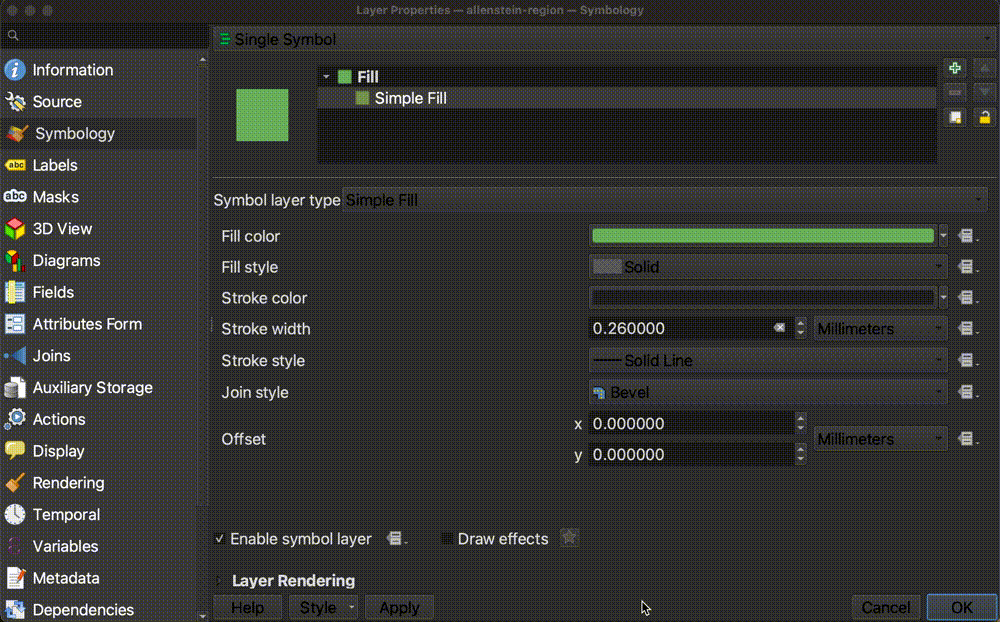 -
We’re going to use a light greenish color which will pop against the map background. Paste the color code for this color into where it says
HTML notation. The value to paste in is#e0f3db
To learn more about color codes, check out htmlcolorcodes.com .
-
Increase the
Stroke Widthto1.0. 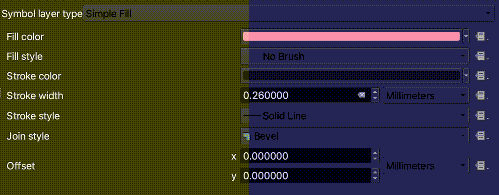 -
Select
OK -
This works better for us, because now we can see the extent of the plebiscite region, but can also “peer under” the layer to see the details of the historic map. Your map should look something like this.

-
Now let’s label the Allenstein region. Double-click the
allenstein-regionlayer in theLayers Panelagain, to open up theLayer Properties.
-
Select the
Labelstab in theLayer Propertiesmenu.
-
Select the drop-down that says
No Labels, and change it toSingle Labels. 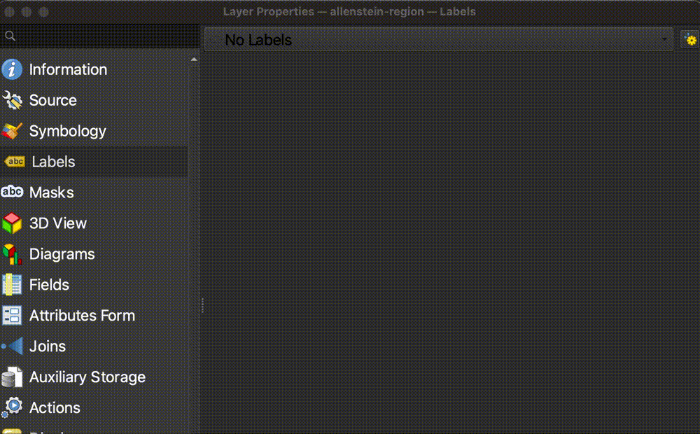 -
Select the
Texttab, and change the size of the label to14.0.
-
Click the color bar next to
Colorand paste#eeeas the color code into theHTML notationfield.
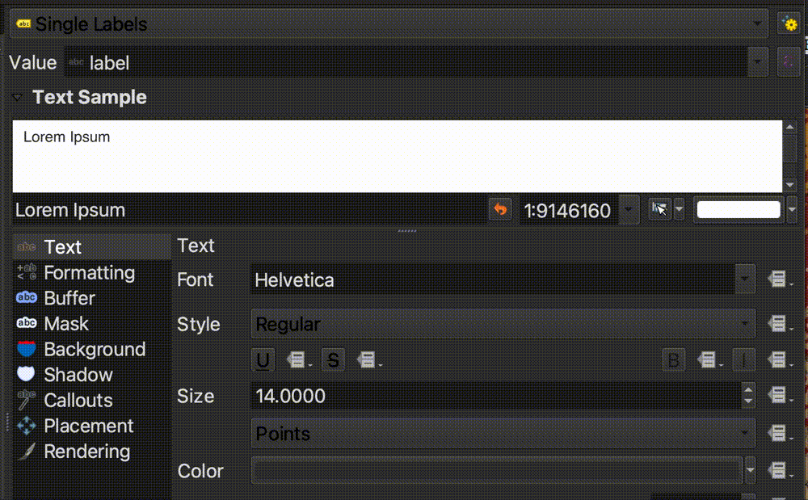 -
Let’s add a drop shadow to make the label stand out better against the map background. Select the label tab called
Shadow, and toggle onDraw drop shadow. 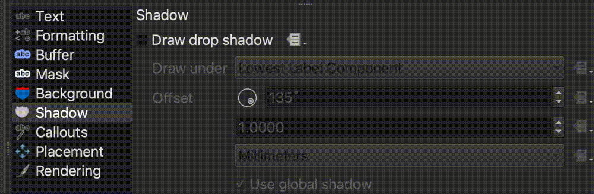 -
Select
OK. Your map should now look like this, with the Allenstein region outlined and labeled. 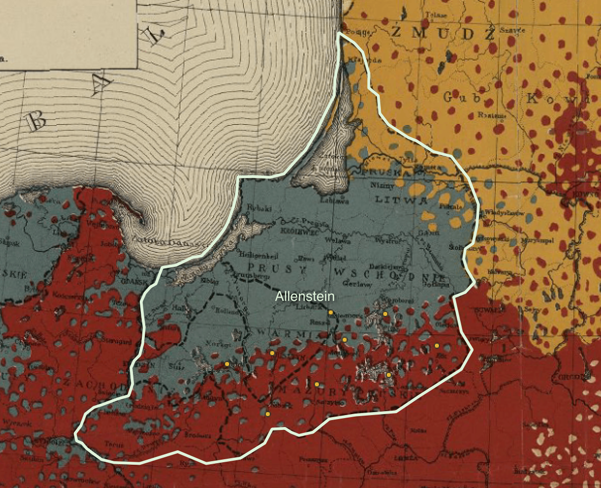 -
The points representing the Polish cities in the
poland-statslayer are also quite small and difficult to see. Let’s make them bigger. Double-click thepoland-statslayer in theLayers Panelto open theLayer Properties. -
Select the
Symbologytab. -
Select where it says
Simple Marker.
-
In the text box next to
Size, change the marker size to6.0.
-
Select
OK. Your map should look something like this.